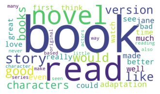
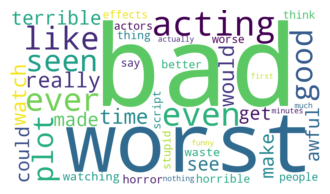
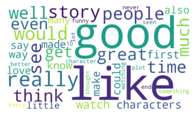
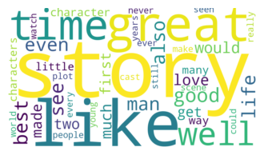

Projects
Steam Review Sentiment & Playtime Modeling
Capstone Project (2025) — Used real-world Steam review data to predict user playtime and analyze engagement trends based on sentiment and user profiles.
- Collected reviews via the Steam API across 3 games and 60,000 reviews from: Baldur’s Gate 3, Darktide, and New World
- Engineered features from review text and user behavior (e.g. lexicon scores, review length, total playtime)
- Clustered 5 distinct user types using k-means with silhouette and SSE validation
- Built regression models to predict playtime; XGBoost achieved R² = 0.707
- Negative reviewers played longer before reviewing and often stopped shortly after
Normalized Playtime Behavior
To better understand how users interact with games before and after leaving reviews, I created a ratio feature: playtime_at_review / total_playtime. This revealed that users who left negative reviews typically spent a greater portion of their total playtime before submitting their feedback — indicating they gave the game a fair try, then disengaged.
Model Insights: Who Plays More?
Feature importance analysis revealed an unexpected trend: the number of reviews on a user's account was the most predictive factor for total playtime — more important than review sentiment or engagement timing. Users with fewer reviews generally spent more time on the game, while frequent reviewers often logged shorter play sessions. This insight suggests that reviewing behavior is a strong proxy for user type and engagement style.

IMDb Sentiment Classification & Topic Modeling
Class Project (2023) — Analyzed 50,000 IMDb movie reviews using NLP techniques to explore sentiment, topics, and model performance.
- Preprocessed text and engineered features using CountVectorizer and TF-IDF
- Compared lexicon baseline (73.2% accuracy) with ML models: SVM, Naive Bayes, and a stacked classifier (89.6%)
- Applied topic modeling with LDA to extract dominant themes from review clusters
- Used clustering and word clouds to identify patterns in review content and sentiment
Topic Modeling Through Clustering
To better understand the types of conversations present in movie reviews, I performed clustering on the TF-IDF vectorized data and visualized each cluster as a word cloud. This revealed five distinct thematic groups among the reviews:
- Cluster 1: Focused on book-to-film adaptations
- Cluster 2: Predominantly negative reviews with emphasis on acting and plot issues
- Cluster 3: Strongly positive reviews with emotionally supportive language
- Cluster 4: Balanced discussion of themes and storytelling
- Cluster 5: Discussion of television shows and spin-offs
These clusters helped validate the topic separation found in LDA modeling, providing a more interpretable view of sentiment and subject matter patterns across the IMDb dataset.
   
Sentiment Prediction Model Performance
| Model | Accuracy | Precision | Recall |
|---|---|---|---|
| Lexicon | 73.21% | 72.38% | 75.06% |
| SVM | 88.95% | 87.83% | 90.42% |
| Random Forest | 82.30% | 79.60% | 86.80% |
| Naive Bayes | 88.95% | 87.80% | 90.40% |
| Stacked (SVM+NB) | 89.60% | 88.60% | 90.90% |